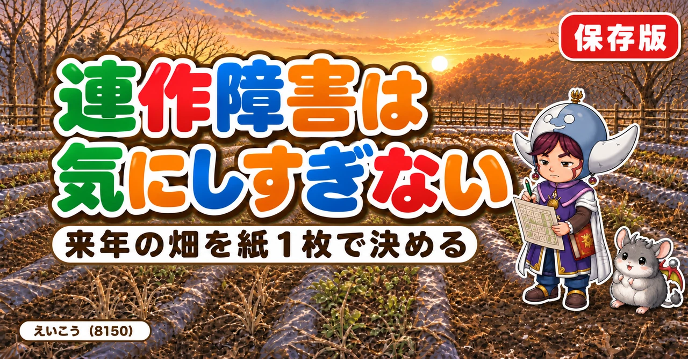
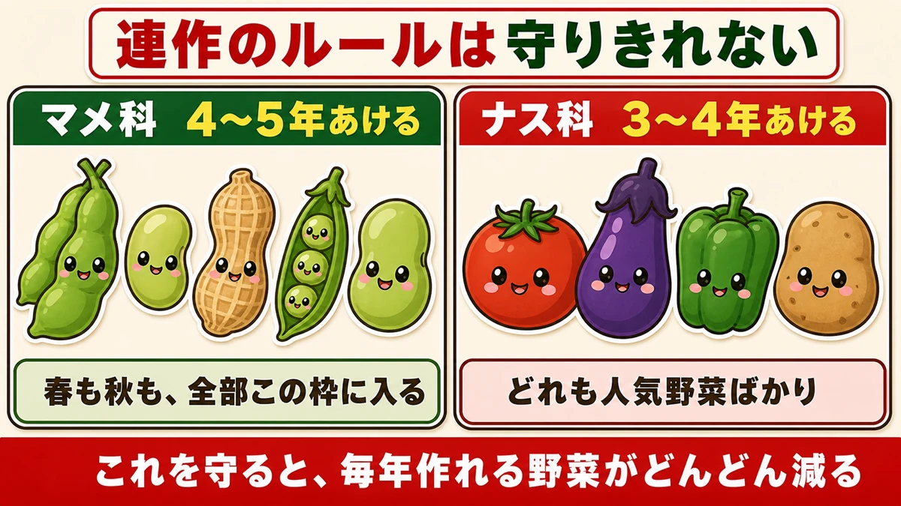
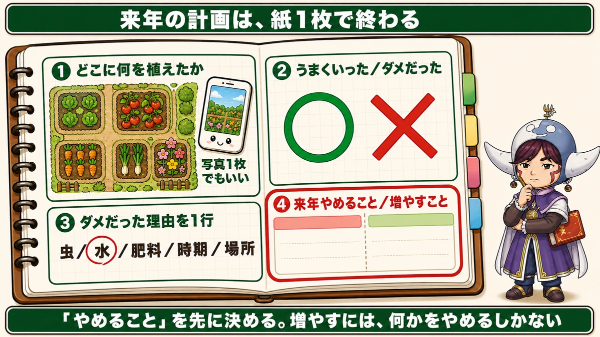
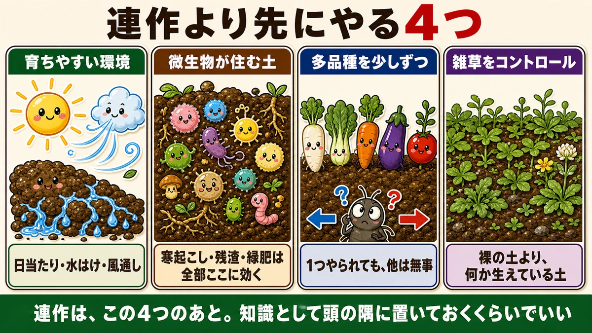
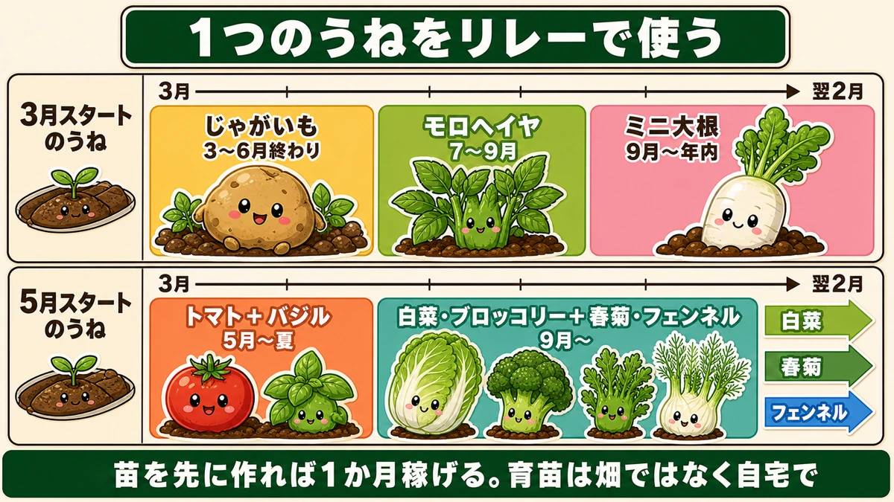
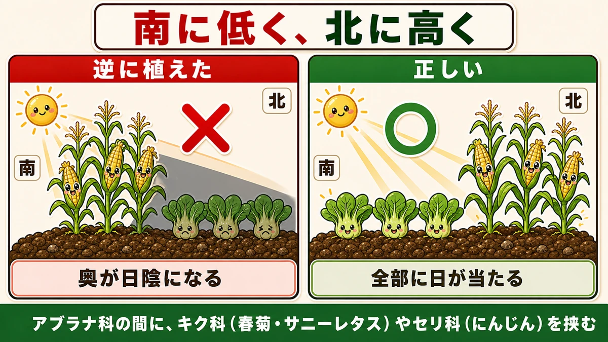
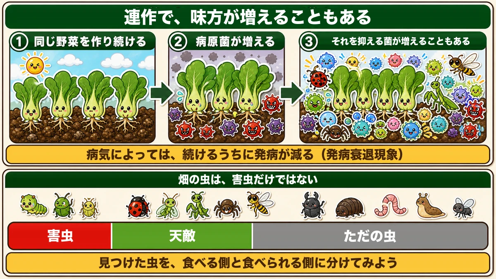

来年の作付け計画の立て方｜今年の振り返り・科で分ける輪作・連作を避ける年数・リレー栽培・配置

どうも、8150（えいこう）です🌱 家庭菜園歴8年、理科の教員免許を持っていて、有機・無農薬で野菜を育てています。
📖 この記事の目次
この記事で分かること
- 来年の作付け計画は、冬のうちに立てておくのがおすすめです。春になると、植える前の土づくりや苗づくりで忙しくなるからです。
- 計画は、今年の振り返りから始めます。どこに何を植えたか、何がうまくいって、何がだめだったかを書き出します。
- 野菜は、見た目ではなく「科」で分けて考えます。じゃがいもとトマトは同じナス科、大根とキャベツは同じアブラナ科です。
- 同じ科の野菜を、同じ場所で続けて育てないのが基本です。何年あけるかの目安は、野菜によって違います。
- ただ、小さな家庭菜園では、連作を完全に避けるのはむずかしいこともあります。気にしすぎず、ほかの工夫と組み合わせる考え方もあります。
- 1つの畝で、時期をずらして年に何回も野菜を育てる「リレー栽培」で、小さな畑を有効に使えます。
冬の畑は、収穫も少なくなって、少しのんびりした季節ですよね。そんな冬こそ、来年の畑の計画を立てるのにぴったりの時期です。今年の畑の記憶が、まだはっきり残っているうちに書き出しておくのがコツです。
「来年は何を育てよう」「去年と同じ場所に植えても大丈夫かな」「もっとたくさんの種類を育てたい」。考え始めると、わくわくしてきませんか。
この記事では、今年の振り返りから、野菜の科で場所を回す考え方、連作を避ける年数、リレー栽培、配置の決め方まで、来年の作付け計画の立て方を順番に書いていきます。
早見：来年の作付け計画の基本（ひと目で分かる目安）
計画の流れ
- 今年の振り返り：どこに何を植えたか、うまくいったか
- 来年育てたい野菜を書き出す
- 野菜を科で分ける
- 畑を区画に分けて、科ごとに場所を回す
- 前作と後作の相性、肥料の残りを確かめる
- リレー栽培で、1つの畝の年間の流れを決める
- 背の高さで、配置を決める
主な野菜の科
- ナス科：トマト、なす、ピーマン、ししとう、じゃがいも
- ウリ科：きゅうり、かぼちゃ、ズッキーニ、スイカ、ゴーヤ
- アブラナ科：大根、かぶ、白菜、キャベツ、ブロッコリー、小松菜
- マメ科：枝豆、いんげん、えんどう、そら豆、落花生
- セリ科：にんじん、パセリ
- キク科：レタス、春菊
- ヒガンバナ科：玉ねぎ、ねぎ、にんにく
- イネ科：とうもろこし
連作を避ける年数の目安
- ナス科（トマトなど）：3年くらい
- ウリ科（きゅうり、スイカなど）：2〜3年くらい
- オクラ：3年くらいごとに同じ場所を使う、という例
- とうもろこし：連作に比較的強いと言われる（説明が分かれる）

作業の手順
ここからは、来年の作付け計画を立てる流れを、順番に書いていきます。
手順1：冬のうちに始める
作付け計画は、冬のうちに立てておくのがおすすめです。
春になると、夏野菜の苗づくりや、植えつけの前の土づくりで、一気に忙しくなります。土づくりは植えつけの2〜3週間前、苗づくりは植えつけの1〜3か月前から始める必要があります。そこから逆算すると、計画は冬のうちに決めておかないと間に合わないんです。
また、冬のあいだに空いている畝に、とりあえず何かを植えてしまうと、春に植えたい野菜の準備ができなくなることがあります。空いている畝の使い方も、来年の計画と合わせて考えておきましょう。
手順2：今年を振り返る
計画は、今年の振り返りから始めます。紙1枚に、次の4つを書き出してみてください。
- どこに何を植えたか：畑の図を描いて、畝ごとに植えた野菜を書きこむ
- うまくいったもの、だめだったもの
- だめだった理由を1行で：植える時期が遅れた、虫にやられた、病気が出た、など
- 来年やめること、増やすこと

振り返りは、完ぺきでなくてもかまいません。思い出せることだけでも書いておけば十分です。振り返りをしておくと、「この畝はトマトを植えたから、来年はナス科を避けよう」「この野菜は時期が遅れてうまくいかなかったから、来年は早めに」といった判断ができるようになります。
振り返りの書き方の例
振り返りは、こんなふうに1行ずつ書いていくと、あとで見返しやすくなります。
- 畝1：トマト。よくとれた。来年はナス科以外にする
- 畝2：きゅうり。7月にうどんこ病。株間が狭かった。来年は株間を広げる
- 畝3：大根。種まきが9月下旬に遅れて、小さかった。来年は9月中旬までに
- 畝4：玉ねぎ（11月植え）。春まで使うので、夏野菜の場所に注意
うまくいったことも、だめだったことも、理由を短く書いておくのがポイントです。
手順3：来年育てたい野菜を書き出す
次に、来年育てたい野菜を書き出します。
- 家族がよく食べる野菜
- 今年うまくいって、また育てたい野菜
- 新しく挑戦してみたい野菜
全部を育てようとすると、畑が足りなくなります。優先順位をつけて、畑の広さに合わせてしぼりこんでいきましょう。
品種を見直す
振り返りで、うまくいかなかった野菜があれば、品種を見直してみるのもいい方法です。
- 病気が出た：病気に強い性質（耐病性）のある品種にする
- とう立ちした：とう立ちが遅い品種にする
- 時期が合わなかった：早生、晩生など、育つ日数の違う品種にする
- 大きくなりすぎた、食べきれなかった：ミニ品種にする
同じ野菜でも、品種を変えるだけで、育てやすさが大きく変わることがあります。
計画のときに自分に聞く5つの質問
- 家族がいちばんよく食べる野菜は何か
- 今年いちばん失敗した野菜と、その理由は何か
- 畑に通える回数は、週に何回くらいか
- 苗を自分で作るか、買うか
- 来年、新しく挑戦したい野菜は何か
この5つに答えていくと、来年の畑の姿が自然と見えてきます。特に、畑に通える回数は、計画を立てるうえでとても大切です。週に1回しか行けないなら、毎日の世話が必要な野菜は少なめに、手間の少ない野菜を多めにする、という判断ができます。
手順4：野菜を科で分ける
書き出した野菜を、科ごとに分けます。
ここで大事なのは、見た目や食べる部分ではなく、「科」で分けることです。
- じゃがいもは土の中の芋を食べますが、トマトやなすと同じナス科です
- 大根は根を、キャベツは葉を、ブロッコリーはつぼみを食べますが、どれも同じアブラナ科です
同じ科の野菜は、かかりやすい病気や、つきやすい虫が似ています。同じ場所で同じ科の野菜を続けると、その病気や虫が増えやすくなる、と言われます。科で分けておくと、場所を回すときに迷わなくなります。最初は覚えるのが大変ですが、よく育てる野菜の科だけでも覚えておくと、計画がぐっと立てやすくなります。
手順5：畑を区画に分けて、場所を回す
畑をいくつかの区画に分けて、科ごとに場所を毎年回していく方法を「輪作（りんさく）」と言います。
たとえば、畑を4つの区画に分けたら、こんなふうに回していきます。
- 1年目：区画1にナス科、区画2にウリ科、区画3にアブラナ科、区画4にマメ科
- 2年目：区画1にウリ科、区画2にアブラナ科、区画3にマメ科、区画4にナス科
- 3年目：さらに1つずつずらす
こうすると、同じ科が同じ区画に戻ってくるのは4年後になります。
ただし、実際の畑では、科ごとに必要な広さが違ったり、育てたい野菜がかたよったりして、きれいに回せないことも多いです。区画の数や大きさは、自分の畑と育てたい野菜に合わせて調整してください。
区画分けの具体例
畑の広さに合わせて、区画の数を決めます。
3区画の場合：
- 区画A：ナス科（トマト、なす、ピーマン、じゃがいも）
- 区画B：ウリ科・マメ科（きゅうり、かぼちゃ、枝豆、いんげん）
- 区画C：アブラナ科・そのほか（キャベツ、白菜、大根、葉物、にんじん、玉ねぎ）
翌年は、A→B→C→Aと、1つずつずらしていきます。
4区画の場合：
- 区画A：ナス科
- 区画B：ウリ科
- 区画C：アブラナ科
- 区画D：マメ科・そのほか
区画が多いほど、同じ科が同じ場所に戻ってくるまでの年数を長くとれます。じゃがいもはナス科なので、トマトやなすと同じ区画に入れるのがポイントです。
1年の流れの例
畑全体の、1年のおおまかな流れの例です。
- 1〜2月：作付け計画を立てる。種を買う。寒起こし
- 3月：じゃがいもを植える。春の葉物の種まき。夏野菜の苗づくり
- 4〜5月：夏野菜を植える。とうもろこし、枝豆の種まき
- 6〜7月：じゃがいもや玉ねぎ、にんにくの収穫。夏野菜の収穫が始まる。秋冬野菜の苗づくり
- 8月：夏野菜を片づけ始める。秋冬野菜の土づくり
- 9月：秋冬野菜の種まき、植えつけ
- 10〜11月：玉ねぎ、にんにく、そら豆、いちごなどを植える
- 12月：冬野菜の収穫。1年の振り返り
この流れを、自分の畑の区画ごとに当てはめていくと、1年の計画ができあがります。
野菜ごとの必要な広さの目安
計画を立てるときは、それぞれの野菜にどれくらいの場所が必要かも考えます。
- トマト、なす、ピーマン：1株あたり50cm四方くらい
- きゅうり：ネットを使えば、1株あたり40〜50cm幅くらい
- かぼちゃ、スイカ：つるが広がるので、1株あたり1〜2m四方
- とうもろこし：受粉のため、2列以上でまとめて植える
- 大根、白菜、キャベツ：1株あたり40〜50cmくらい
- 葉物、にんじん：すじまきで、1列に何株も育てられる
かぼちゃやスイカのように広い場所をとる野菜は、小さな畑では、つるを支柱で上に伸ばす育て方にすると、場所を節約できます。
手順6：前作と後作の相性を確かめる
前に植えた野菜（前作）と、そのあとに植える野菜（後作）には、相性があると言われます。
- じゃがいものあと：キャベツ、小松菜、ブロッコリーなどの葉物が向いている、という説明
- 玉ねぎのあと：ほうれん草、大根、キャベツなど
- とうもろこしのあと：にんじんや大根などの根菜は避けたほうがいい、という説明（根にこぶを作る小さな虫、センチュウが増えやすいため）
- ナス科のあと：大根やにんじんは、センチュウの理由で避けたほうがいい、という説明
- 枝豆のあと：白菜、にんじん、大根、レタスなど
ただし、相性については、説明が分かれているものもあります（あとで書きます）。
手順7：肥料の残りを考える
前の野菜にたくさん肥料をやっていた場所は、土の中に肥料が残っていることがあります。そこに、また同じ量の肥料を入れると、肥料が多すぎて、葉ばかり茂ったり、病気や虫が出やすくなったりします。
- 前作に何を、どれくらい入れたかを、振り返りのメモに残しておく
- 肥料をよく使った夏野菜のあとは、次の野菜の肥料を控えめにする
- 根菜は、前の肥料が残っていれば、新しく入れなくても育つことが多い
振り返りのときに、肥料のことも1行書いておくと、来年の計画で役立ちます。
手順8：種と苗の準備の予定を立てる
計画ができたら、種や苗をいつ準備するかも決めておきます。
- 種は、冬のうちに買っておくと、人気の品種も手に入りやすい
- 夏野菜の苗を自分で作るなら、2〜3月から苗づくりを始める
- 苗を買うなら、4月中旬ごろからお店に並ぶ
- 秋冬野菜の苗づくりは、7月ごろから
種袋の裏で、まき時と育苗日数を確かめて、植える日から逆算して準備の日を決めてください。
手順9：畑ノートをつける
計画と記録は、1冊のノートにまとめておくと便利です。
- 畑の図：毎年の区画と、植えた野菜を書きこむ
- 種まき、植えつけ、収穫の日付
- 使った肥料の種類と量
- うまくいったこと、だめだったこと、その理由
- 使い終わった種袋を貼っておく
数年分の記録がたまると、自分の畑のくせが見えてきます。日当たりのいい畝、水がたまりやすい畝、虫が出やすい場所など、記録はそのまま、自分の畑だけの教科書になっていきます。同じ科の野菜を何年前に植えたかも、すぐに分かるようになります。
冬に空いている畝の使い方
冬のあいだ、空いている畝は、来年の準備に使えます。
- たい肥を入れて耕し、土を休ませる
- 寒起こし：土を大きく掘り起こして、冬の寒さにさらす。土のかたまりがほぐれる、と言われる
- 春に植える野菜の場所を、先に準備しておく
ただし、春にすぐ使う畝に、冬のあいだ何かを植えてしまうと、春の準備が間に合わなくなることがあります。空いている畝の使い方も、来年の計画と合わせて決めてください。
土づくりも、年間で計画する
たい肥や肥料を入れる時期も、作付け計画と合わせて考えておきます。
- 春の植えつけの場所：冬から早春に、たい肥を入れておく
- 秋冬野菜の場所：夏野菜を片づけたあと、8月ごろに土づくり
- じゃがいもの場所：石灰を入れすぎない
植えつけの2〜3週間前までに土づくりをすませておくと、根を傷めにくくなります。
連作より先に、効くことがある
小さな畑では、連作を守りきれないこともある
輪作は大切ですが、小さな家庭菜園では、きれいに守りきるのがむずかしいこともあります。
- 育てたい野菜の多くが、人気のナス科とアブラナ科にかたよる
- 畑が狭くて、区画をたくさん作れない
- トマトやなすは、毎年たくさん育てたい
そんなときは、連作を避けることだけにこだわらず、ほかの工夫と組み合わせて考える方法もあります。

①野菜が育ちやすい環境をつくる
日当たり、水はけ、風通し。野菜がよく育つ環境を整えることが、病気や虫に負けない株を育てる基本です。作りたい野菜を、その野菜に合った日当たりや水はけの場所に植える、という考え方もあります。
②土の中の生き物が住みやすい土にする
たい肥などの有機物を入れて、土の中の微生物や小さな生き物が住みやすい土を作ります。いろいろな生き物がいる土では、特定の病気のもとだけが増えにくくなる、と言われます。
③いろいろな野菜を少しずつ育てる
同じ野菜をたくさん育てるより、いろいろな野菜を少しずつ育てるほうが、特定の病気や虫が広がりにくくなります。家庭菜園ならではの、少量多品種の育て方です。
④雑草を、敵ではなく味方として扱う
雑草をすべて取りのぞくのではなく、刈った草を株元に敷いたり、土にすきこんだりして、土の栄養にする考え方もあります。
ただし、こうした工夫をしても、病気が出ることはあります。有機の資材で土づくりをして、間にほかの野菜を育てても、ナスが病気になったという話もあります。連作をまったく気にしなくていい、というわけではないので、できる範囲で場所を回すことは続けてください。
リレー栽培で、1つの畝を年に何回も使う
リレー栽培とは
1つの畝で、収穫が終わったら次の野菜、また次の野菜、と、時期をずらして年に何回も野菜を育てる方法です。小さな畑でも、たくさんの種類の野菜を育てられます。

例1：3月スタートの畝
- 3月：じゃがいもを植える → 6月に収穫
- 7月：にんじんの種をまく、または夏の葉物 → 秋に収穫
- 10月〜11月：玉ねぎ、そら豆などを植える → 翌年の春から初夏に収穫
例2：5月スタートの畝
- 5月：きゅうりやとうもろこしを植える → 7〜8月に収穫
- 8月下旬〜9月：大根、白菜などの秋冬野菜 → 冬に収穫
- 冬：空けて土を休ませる、または寒起こし
苗を先に作れば、1か月かせげる
リレー栽培のこつは、前の野菜を収穫しているあいだに、次の野菜の苗を作っておくことです。畑が空いたらすぐに苗を植えられるので、1つの畝で育てられる期間を長くとれます。
ただし、大根やにんじんのように、苗を作らずに畑に直接種をまく野菜は、前の野菜を早めに切り上げて、種まきの準備をしておく必要があります。
翌年まで畝を使う野菜に注意
玉ねぎ、にんにく、いちご、そら豆、スナップえんどうなど、秋に植えて翌年の春から初夏に収穫する野菜は、半年以上も畝を使い続けます。春に夏野菜を植えたい場所と重ならないように、計画の段階で確かめておきましょう。
配置は「背の高さ」で決める
背の高い野菜は、北側に
畑の配置を決めるときは、野菜の背の高さを考えます。
- 背の高い野菜（トマト、きゅうり、とうもろこしなど）：畑の北側に
- 背の低い野菜（葉物、にんじんなど）：畑の南側に
背の高い野菜を南側に植えると、北側の野菜が日陰になってしまいます。畝の向きは、南北にすると、株の両側に日が当たりやすくなります。

一緒に植えると相性のいい野菜
違う野菜を近くに植えると、お互いによい影響があると言われる組み合わせもあります（コンパニオンプランツ）。
- トマトとバジル
- きゅうりとねぎ
- キャベツとレタス
- 枝豆とレタス
ただし、近くに植えると相性がよくない、と言われる組み合わせもあります。たとえば、じゃがいもとキャベツは、近くに植えないほうがいい、という説明があります。これは、時期を分けて前作・後作として植える場合とは別の話なので、混同しないようにしてください。
1つの畝に、何品目も入れる
1つの畝を何本かの列に分けて、違う野菜を植えたり、種をまいたりする方法もあります。違う科の野菜を隣り合わせにすると、虫の被害がある程度減る、とも言われます。
計画の見直しは、季節の変わり目に
計画は、一度立てたら終わりではありません。季節の変わり目ごとに見直すと、より実際の畑に合った計画になっていきます。
- 春の植えつけ前：苗の準備と、区画の割りふりを最終確認
- 夏の初め：秋冬野菜の場所と、苗づくりの予定を確認
- 秋の終わり：翌年まで畝を使う野菜の場所を確認
- 冬：1年を振り返って、来年の計画を立てる
家族で計画を立てる
作付け計画は、家族みんなで立てるのも楽しいですよ。
- 食べたい野菜を、家族それぞれに聞いてみる
- 子どもに、育ててみたい野菜を1つ選んでもらう
- 畑の図に、色えんぴつで野菜の場所を塗り分ける
自分で選んだ野菜は、育てる楽しみも、食べる楽しみも、ぐっと大きくなります。収穫のときには、「これは自分が選んだ野菜だよ」と、きっと得意そうな顔を見せてくれますよ。
失敗の見分け方
同じ場所で育てたら、育ちが悪くなった
同じ科の野菜を続けて植えた可能性があります。振り返りのメモで、前の年に何を植えたかを確かめてください。次の年は、違う科の野菜を植えるか、太陽熱消毒やたい肥で土を整えてから植えるといいと思います。
計画どおりに植えられなかった
前の野菜の収穫が遅れて、次の野菜の植えつけが間に合わないことがあります。リレー栽培では、収穫が遅れそうなら、早めに切り上げるか、苗を作っておいて植える時期を調整してください。
肥料が多すぎて、葉ばかり茂った
前の野菜の肥料が残っていた可能性があります。次からは、前作に入れた肥料を記録しておき、控えめから始めてください。
秋に植えた野菜で、春の植えつけ場所が足りない
玉ねぎやにんにく、そら豆などを広く植えすぎると、春に夏野菜を植える場所が足りなくなることがあります。秋に植える量は、春の計画と合わせて決めてください。
育てたい野菜が多すぎて、計画がまとまらない
全部を育てようとせず、まずは家族がよく食べる野菜から優先して決めていきましょう。新しい野菜は、1〜2種類だけ挑戦する、と決めておくと、計画がまとまりやすくなります。
説明が分かれていること
輪作を優先するか、環境を優先するか
- 前の年にナス科を植えた場所には、じゃがいもを植えない。科で場所を回すことを大切にする、という説明
- 少量多品種で、有機・無農薬で育てるなら、連作をそこまで気にしなくていい。作りたい野菜を優先し、日当たりや水はけで場所を決める、という説明
どちらにも一理あります。場所を回せるなら回し、回しきれないところは、土づくりや環境の工夫でおぎなう、と考えるといいと思います。
とうもろこしは連作できるか
- とうもろこしには、連作障害がほとんどない、という説明
- 連作に強いが、続けると収穫量が落ちる、という説明
連作に比較的強い野菜であることは共通しています。ただ、何年も続けるより、ときどき場所を変えるほうが安心です。
じゃがいものあとに、にんじんはいいか
- じゃがいものあとに、にんじんをすすめる、という説明
- じゃがいもと同じ、土の中を食べる野菜なので、にんじんや大根は向かない、という説明
同じ人たちの中でも説明が分かれています。畑の状態や、前のじゃがいもの育ち方を見て判断してください。
じゃがいもを植える場所の土の酸度
- じゃがいもに合う酸度は5〜6くらい。6.5以上になると、病気が出やすくなる、という説明
- 6.5くらいなら安全、という説明
数字には少し幅がありますが、どちらも、じゃがいもを植える場所には石灰を入れすぎないように、という点では共通しています。
冬に土を深く掘り返すか
冬に土を深く掘り返して寒さにさらす（天地返しや寒起こし）方法もありますが、どれくらい深く掘るか、そもそも必要かは、説明が分かれています。土がかたい畑や、水はけの悪い畑では効果があると言われますが、ふかふかの畑なら無理にしなくてもかまいません。
よくある質問
Q. 畑が狭くて、区画を分けられません
A. 1つの畝を、何本かの列に分けて、違う科の野菜を植える方法があります。毎年、列の位置を少しずつずらしていけば、同じ科が同じ場所に続くのを避けやすくなります。プランターを組み合わせるのもいい方法です。
Q. 去年何を植えたか、覚えていません
A. 今年から記録をつけましょう。畑の図を描いて、植えた野菜と日付を書いておくだけで十分です。スマートフォンで、季節ごとに畑の写真を撮っておくのもおすすめです。あとで見返すと、意外な発見があります。
Q. 連作障害が出たら、どうすればいいですか？
A. その場所では、しばらく違う科の野菜を育ててください。夏なら太陽熱消毒で土を整えたり、たい肥を入れて土の中の生き物を豊かにしたりするのも効果があります。トマトやなすなら、病気に強い接ぎ木苗を使う方法もあります。
Q. 計画どおりにいかなかったら？
A. 計画は、あくまで目安です。天気や体調で予定がずれるのは当たり前のこと。ずれたら、早く育つ品種に切りかえる、植える時期をずらす、などで柔軟に対応してください。うまくいかなかったことも、来年の計画に生かせます。
Q. 作付け計画どおりにしたのに、病気が出ました
A. 場所を回していても、雨の多い年や、暑さが厳しい年には、病気が出ることがあります。連作だけが病気の原因ではありません。病気が出た株は早めに片づけ、風通しや水はけ、株間を見直してください。どんな病気が、どの時期に出たかを記録しておくと、翌年の対策に役立ちます。
Q. 同じ場所に、何年あければ安心ですか？
A. 野菜によって違いますが、ナス科なら3年くらい、ウリ科なら2〜3年くらいが目安と言われます。ただ、これは目安で、畑の状態によって変わります。前に植えたときに病気が出た場所は、長めにあけるほうが安心です。
Q. 輪作の計画を立てても、育てたい野菜がナス科ばかりです
A. トマトやなす、ピーマンは人気の野菜なので、ナス科にかたよりがちですよね。その場合は、ナス科の区画を広めにとって、その中で場所を少しずつずらしていく方法があります。接ぎ木苗を使ったり、土づくりでたい肥をしっかり入れたりして、連作の影響をやわらげる工夫も組み合わせてください。
Q. 計画表は、どんな形で作ればいいですか？
A. 決まった形はありません。畑の図に、区画ごとに野菜の名前を書きこむだけでも十分です。表にする場合は、縦に区画、横に月を並べて、いつ何を植えて、いつ収穫するかを書きこむと、リレー栽培の流れが分かりやすくなります。
Q. 秋冬の作付けも、冬のうちに決めておくべきですか？
A. おおまかに決めておくと安心です。特に、夏野菜を片づけたあとの場所に、どの秋冬野菜を植えるかを考えておくと、夏の終わりに慌てずにすみます。くわしい計画は、夏の初めにもう一度見直せば大丈夫です。
Q. 計画を立てる時間がありません
A. まずは、今年植えたナス科（トマト、なす、ピーマン、じゃがいも）の場所だけでも書き出してください。来年、その場所にナス科を植えないようにするだけでも、大きな違いがあります。くわしい計画は、時間ができたときに少しずつ足していけば大丈夫です。
Q. 新しく畑を借りました。1年目は何から計画すればいいですか？
A. 1年目は、前の使い方が分からないことも多いので、たい肥を入れて土づくりをし、育てやすい野菜から始めるのがおすすめです。そのうえで、植えた野菜と場所をしっかり記録しておけば、2年目からは輪作の計画が立てやすくなります。
Q. 区画の境目は、どう作ればいいですか？
A. 畝ごとに区画を分けるのがいちばん分かりやすいです。通路をはさんで区画を分けたり、ひもや杭で目印をつけたりする方法もあります。毎年同じ位置で区画を分けておくと、記録とも照らし合わせやすくなります。
Q. 市民農園で、毎年区画が変わります
A. 区画が変わる場合は、前にその区画を使っていた人が何を植えていたかが分からないことも多いです。管理している人に聞いてみるか、分からなければ、たい肥をしっかり入れて土づくりをしてから、育てやすい野菜から始めると安心です。
Q. プランターでも、作付け計画は必要ですか？
A. プランターでも、同じ土で同じ科の野菜を続けると、育ちが悪くなることがあります。プランターごとに何を植えたかを記録して、次は違う科の野菜を植えるようにしてください。土を新しく入れかえるか、古い土を再生して使うのも効果的です。
Q. 毎年同じ野菜を育てたいのですが
A. 好きな野菜を毎年育てたい気持ちは、よく分かります。その場合は、区画を毎年ずらして、同じ場所に戻ってくるまでの年数をあけるようにしてください。トマトやなすなら、3年くらいあけられると安心です。
学ぶ🔬 連作すると、味方も増える？
ここからは、連作と土の中の生き物について、少しだけ深く書いておきます。読み飛ばしても大丈夫です。
連作障害のしくみ
同じ科の野菜を同じ場所で続けると、育ちが悪くなったり、病気が出やすくなったりします。これを連作障害と言います。
原因としては、主に次のようなことが言われます。
- その野菜を好む病気のもとや虫が、土の中に増える
- その野菜がよく吸う養分ばかりが減って、土の養分がかたよる
連作を続けると、病気が減ることもある
一方で、同じ野菜を何年も続けて育てていると、あるとき病気が減ってくることがある、という話もあります。病気のもとが増えると、それを食べたり、おさえたりする別の微生物も増えてきて、土の中のバランスがとれてくる、という考え方です。

ただ、これがどの畑でも、どの野菜でも起きるわけではありません。連作を続ければ必ず病気が減る、と考えるのは危険です。基本は場所を回すこと、そのうえで、土の生き物を豊かにする工夫を重ねる、と考えてください。
連作障害が出やすい野菜、出にくい野菜
一般に、連作障害が出やすいと言われるのは、次のような野菜です。
- ナス科：トマト、なす、ピーマン、じゃがいも
- ウリ科：きゅうり、スイカ、メロン
- マメ科：えんどう、そら豆、枝豆
一方、比較的出にくいと言われるのは、次のような野菜です。
- かぼちゃ、さつまいも
- ねぎ、玉ねぎ、にんにく
- とうもろこし
計画を立てるときは、連作障害が出やすい野菜から先に場所を決めて、出にくい野菜で調整すると、組み立てやすくなります。
なぜ冬に計画を立てると、うまくいくのか
野菜づくりは、植える日から逆算して、いろいろな準備が必要です。
- 植えつけの2〜3週間前：土づくり
- 植えつけの1〜3か月前：苗づくり
- 苗づくりの前：種を手に入れる
春の植えつけから逆算すると、準備は冬のうちに始まっています。冬に計画を立てておくと、それぞれの準備を、ちょうどいいタイミングで始められます。計画がないまま春を迎えると、「土づくりが間に合わない」「苗を作る時期を過ぎていた」ということになりやすいんです。
なぜ科で分けるのか
同じ科の野菜は、体のしくみが似ています。かかりやすい病気や、根を食べる虫、好きな養分なども似ています。
食べる部分（根、葉、実）で分けても、同じ科なら、同じ病気や虫の影響を受けます。だから、作付け計画では、食べる部分より、科で分けて考えるのが大切なんです。
根の深さで回す、という考え方
野菜の根の伸び方は、種類によって違います。
- 根が深く伸びる野菜：大根、ごぼう、とうもろこし、トマトなど
- 根が浅く広がる野菜：きゅうり、葉物、玉ねぎなど
根の深さが違う野菜を交互に育てると、土の深いところと浅いところの養分を、まんべんなく使える、という考え方もあります。科で回すことと合わせて、参考にしてみてください。
なぜ豆のあとは、葉物がよく育つと言われるのか
豆のなかまの根には、根粒菌という菌がすみついていて、空気の中の窒素を、植物が使える形に変えてくれます。豆を育てたあとの土には、その窒素が残っていることがあり、窒素をよく使う葉物がよく育つ、と言われます。
ただ、どれくらい残るかは畑によって違うので、「豆のあとは肥料がいらない」とは言い切れません。葉の色を見ながら、肥料を調整してください。
まとめ
ここまで読んでくださって、ありがとうございます！
来年の作付け計画のポイントを、もう一度まとめておきます。
- 計画は冬のうちに。春は準備で忙しくなる
- まず今年を振り返る。どこに何を植え、何がうまくいったか
- 野菜は「科」で分ける。じゃがいもはナス科、大根はアブラナ科
- 畑を区画に分けて、科ごとに場所を回す（輪作）
- 連作を避ける年数は、ナス科3年、ウリ科2〜3年が目安
- 前作と後作の相性、肥料の残りも考える
- 守りきれないときは、環境・土の生き物・少量多品種でおぎなう
- リレー栽培で、1つの畝を年に何回も使う
- 背の高い野菜は北側、低い野菜は南側に
作付け計画は、紙1枚から始められます。冬の夜、温かい部屋で、来年の畑を思い描きながら書いてみてください。どこに何を植えようか考えている時間も、家庭菜園の大きな楽しみのひとつです。春の畑のにぎわいを思い浮かべながら、あせらずゆっくり、計画を立ててみてくださいね。
まずは、今年どこに何を植えたかを、記憶がはっきりしているうちに書き出してみましょう🗒️
プラグトレー 128穴（育苗用）
記事で「苗を先に作れば1か月稼げる」と書いたのがこれです。128穴もあると多いので、4分の1に切って32穴にすると家庭菜園にちょうどいいサイズになります。1枚210円なので、切って使い捨ててもいいくらいです。
![[商品価格に関しましては、リンクが作成された時点と現時点で情報が変更されている場合がございます。]](https://hbb.afl.rakuten.co.jp/hgb/56d221a0.da732c49.56d221a1.b57a6709/?me_id=1230952&item_id=10006155&pc=https%3A%2F%2Fthumbnail.image.rakuten.co.jp%2F%400_mall%2Fnou-nou%2Fcabinet%2Fnousi2%2F0108007400004.jpg%3F_ex%3D240x240&s=240x240&t=picttext "[商品価格に関しましては、リンクが作成された時点と現時点で情報が変更されている場合がございます。]")

えん麦のタネ（緑肥用）
空いたうねにまいておくと、冬の間も土の微生物が生きていられます。春に花が咲いたら刈ってすき込むだけ。連作より先にやるべき4つのうち「微生物が住む土をつくる」に、いちばん手軽に効きます。
![[商品価格に関しましては、リンクが作成された時点と現時点で情報が変更されている場合がございます。]](https://hbb.afl.rakuten.co.jp/hgb/56d21de3.ae31fd42.56d21de4.bc885a0a/?me_id=1381384&item_id=10000017&pc=https%3A%2F%2Fthumbnail.image.rakuten.co.jp%2F%400_mall%2Fyohonsha%2Fcabinet%2F10419213%2Fcompass1768461115.jpg%3F_ex%3D240x240&s=240x240&t=picttext "[商品価格に関しましては、リンクが作成された時点と現時点で情報が変更されている場合がございます。]")
備中鍬（三本爪）
リレー栽培で前の野菜を片づけて次を植えるとき、これがあると作業がまるで違います。1050mmの柄付きで、腰を伸ばしたまま使える長さ。長く使う道具なので、いいものを1本持っておくと結局は安くつきます。
![[商品価格に関しましては、リンクが作成された時点と現時点で情報が変更されている場合がございます。]](https://hbb.afl.rakuten.co.jp/hgb/56d752c3.3ce6fd3b.56d752c4.f8896826/?me_id=1209220&item_id=10002030&pc=https%3A%2F%2Fthumbnail.image.rakuten.co.jp%2F%400_mall%2Fhonmamon-r%2Fcabinet%2Fimg3%2Fw4580149745643.jpg%3F_ex%3D240x240&s=240x240&t=picttext "[商品価格に関しましては、リンクが作成された時点と現時点で情報が変更されている場合がございます。]")